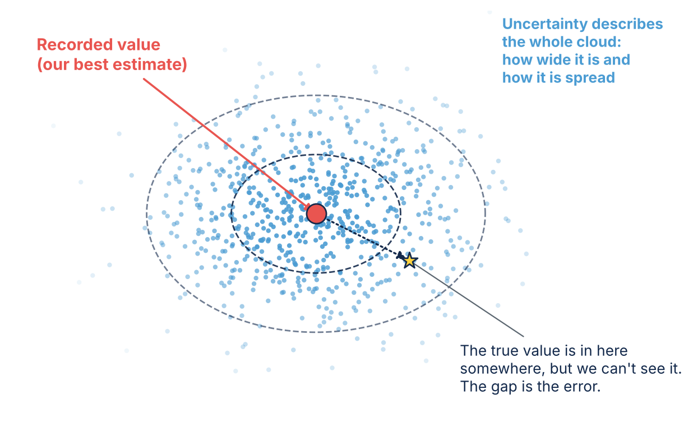
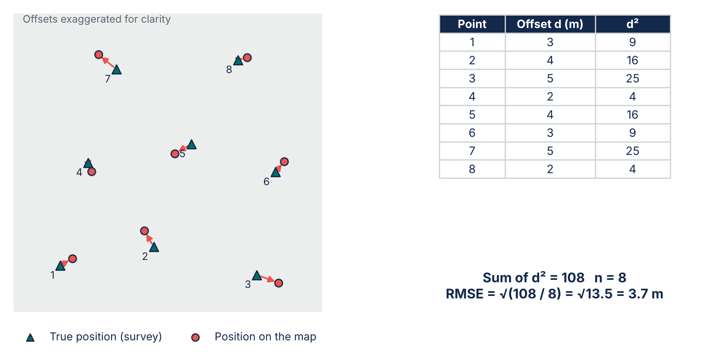
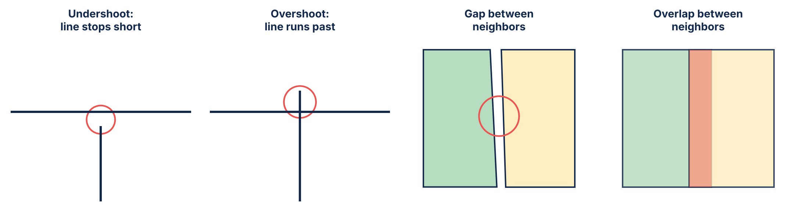
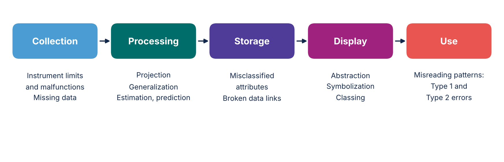
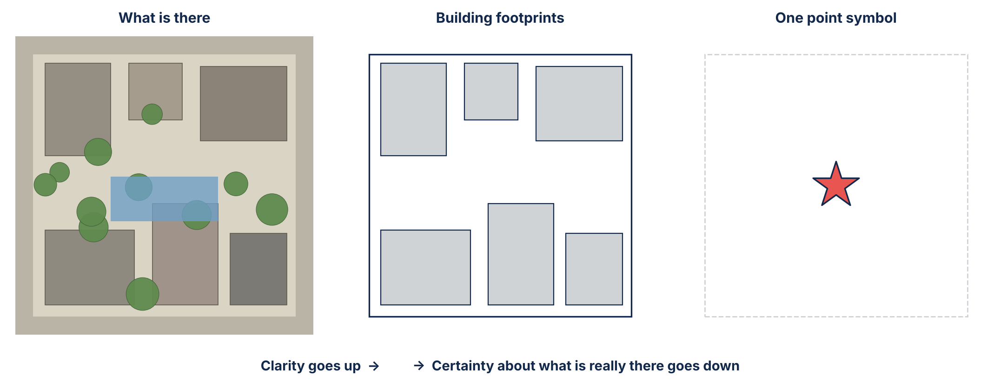
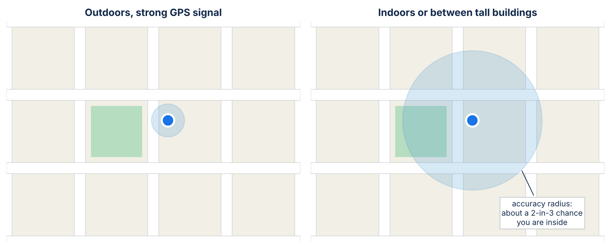
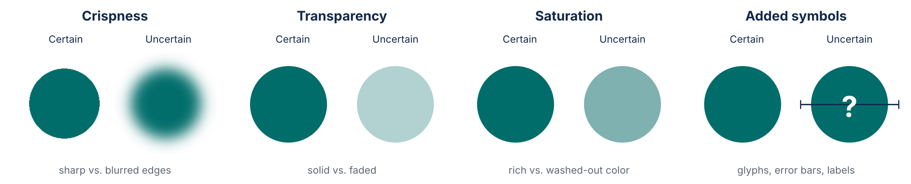
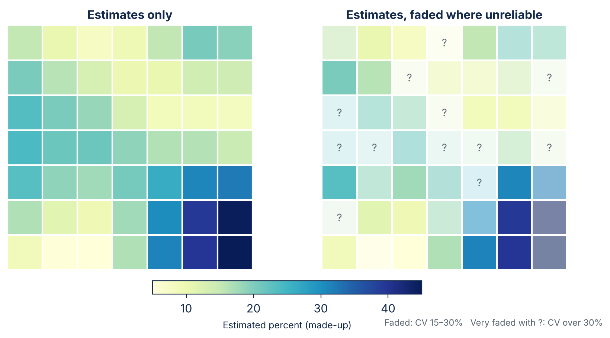
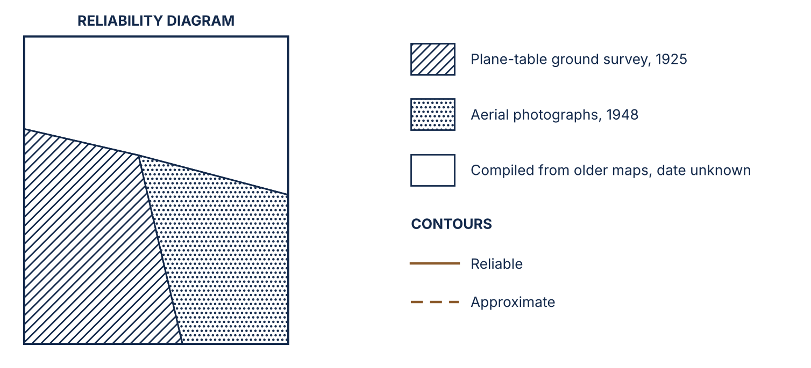

20 Uncertainty in Geospatial Data
By the end of this chapter you should be able to:
- Define uncertainty, and tell it apart from error.
- Name the elements of geospatial data quality, and give an example of a problem with each.
- Calculate positional accuracy as a root mean square error, and explain a map accuracy standard.
- Trace how uncertainty enters at each stage of the data lifecycle, from collection to use.
- Choose visual variables to show uncertainty on a map.
- Explain Type 1 and Type 2 errors in map reading, and why uncertainty matters to the people who use maps.
Every chapter in this book has produced numbers that look exact: a coordinate to six decimal places, a population density for every county, a suitability score for every cell, a flood risk class for every community. None of them is exact. Coordinates come from instruments with limits. Census figures are estimates with margins of error (Chapter 8). Interpolated surfaces are predictions (Chapters 16 and 17). Suitability and risk scores rest on thresholds and weights that someone chose (Chapters 18 and 19). This chapter is about the gap between what a map shows and what is true, and about how to be honest about it.
20.1 What is uncertainty?
Uncertainty is the degree to which we aren’t sure of something. Picture it as a cloud of all the values a measurement could plausibly take (Figure 20.1). The value we record is our best estimate, near the middle of the cloud. The true value is in there somewhere, but we can’t see it.

Two words are easy to confuse:
- Error is the difference between a recorded value and the true value. A well that the map puts 12 m north of where it really is has a positional error of 12 m.
- Uncertainty is how much we don’t know about that error. Usually we can’t know the error at any particular well, because if we knew the true location, we’d have mapped it there. We can only describe how large errors tend to be.
Every map is a model of the world, so every map carries some uncertainty (Zhang and Goodchild 2002). The question is not whether a map is uncertain, but how uncertain it is, whether that matters for the job at hand, and whether the map says so.
20.2 Geospatial data quality
Data quality and uncertainty are two sides of the same coin. Chapter 10 introduced the seven elements of spatial data quality, which van Oort (2006) found shared by mapping standards around the world, and which are now written into ISO 19157 (Table 20.1). Each element names a place where uncertainty can enter the data.
| Element | What it describes |
|---|---|
| Lineage | Sources, methods, and processing history |
| Positional accuracy | How close coordinates are to true positions |
| Attribute accuracy | How correct the non-spatial, non-temporal values are |
| Logical consistency | Whether the relationships within the data agree with each other |
| Completeness | Missing data and excess data |
| Usage, purpose, and constraints | What the data were made for, and their limits |
| Temporal quality | How valid and accurate the time measurements are |
The rest of this section looks at several of them more closely.
20.2.1 Positional accuracy
Positional accuracy is how close a position on the map is to its true position on the ground. A famous joke makes the point: the New York-New York Hotel in Las Vegas has a skyline and a Statue of Liberty that are correct as features, but they are about 2,200 miles from where they belong. Every feature can be right in kind and still wrong in position.
Positional accuracy is tested by comparing the map with a more accurate reference, such as a GPS survey, at a set of test points (or check points, as in georeferencing in Chapter 9). For each test point \(i\), measure the distance \(d_i\) between its mapped position and its true position. The usual summary is the root mean square error (RMSE):
\[ \text{RMSE} = \sqrt{\frac{\sum d_i^2}{n}} \]
where \(n\) is the number of test points. Square each offset, average the squares, then take the square root of the whole average (Figure 20.2).

Squaring makes large offsets count more than small ones, so a few badly placed points raise the RMSE sharply. RMSE is the same statistic you met for georeferencing (Chapter 9) and for cross validation in interpolation (Chapter 16).
Accuracy standards turn RMSE into a pass or fail. The U.S. National Map Accuracy Standards of 1947 (U.S. Bureau of the Budget 1947) said that for maps at a scale of 1:20,000 or smaller, no more than 10% of tested points may be off by more than 1/50 inch on the map. At 1:24,000, the scale of USGS topographic quadrangles, 1/50 inch is 40 feet on the ground. So 90% of tested points must fall within 40 feet of their true positions. Today the National Standard for Spatial Data Accuracy (Federal Geographic Data Committee 1998) reports accuracy in ground units at 95% confidence (about 1.73 times the RMSE for horizontal positions), whatever the map scale.
20.2.2 Attribute accuracy
Attribute accuracy is how faithfully names, classes, and values describe each feature. A feature can be in the right place with the wrong label. A 1920 road guide, the Automobile Blue Book, labeled the campus in Boulder “Colorado State University.” It is the University of Colorado. The geometry was fine; the attribute was wrong. In the same way, a land-cover map could put a desert pixel in exactly the right place, and still call it forest.
Attribute errors can be categorical (a wrong name or class, such as a misclassified land-cover pixel) or numeric (a wrong value, such as a wrong elevation or population count). For categorical data, accuracy is often summarized with a confusion matrix (or error matrix), which cross-tabulates the classes on the map against the true classes at a sample of test sites. The diagonal holds the sites classed correctly; the cells off the diagonal show which classes are confused with which.
20.2.3 Logical consistency
Logical consistency is the internal consistency of the data: whether the same thing is always recorded the same way, features have the right geometry type, and relationships are valid. Table 20.2 shows one coffee chain, nine records, and seven different problems.
| Name | Address | Type | Problem |
|---|---|---|---|
| Starbucks | 100 Main St. | Point | None |
| Starbucks | 110 Main St. | Point | None |
| $tarbuck$ | 111 Main St. | Point | Symbols in name |
| STARBUCKS | 112 Main St. | Point | Inconsistent case |
| Café Starbucks | 200 Main St. | Point | Name variant |
| Starbuck | 201 Main St. | Line | Wrong geometry type |
| Starbucks | 201b Main St. | Point | Address format |
| star bucks | 400 Main St. | Point | Spelling and case |
| Starbux | 1 Mainz St. | Polygon | Name, street, and geometry |
None of these records is wrong about location by itself. Together, they break counts, joins, and geocoding. A query for Name = 'Starbucks' (Chapter 5) finds only three stores, and an address-matching tool (Chapter 9) may fail on “201b” and “Mainz St.” Data cleaning, and validation rules such as a list of allowed names, catch these.
Consistency rules apply to geometry and topology too (Figure 20.3, Figure 20.4). A road should keep one class from end to end, or a reader sees an interstate turn into a ramp and back again. Lines that should meet must actually connect, with no undershoots or overshoots; polygons must close; and neighboring polygons must not overlap or leave gaps. GIS software can test these rules automatically: ArcGIS Pro with geodatabase topology, and QGIS with the Topology Checker and Geometry Checker plugins.
![Two maps of the same interchange: a horizontal road, a vertical road crossing it, and a ramp arching over the crossing. Left, inconsistent: the horizontal road switches from thick red interstate to orange ramp to red interstate to thin gray local road and back to interstate; the vertical road switches from local road to ramp to local road; one half of the arch is a ramp and the other half interstate. Right, consistent: the horizontal road is interstate throughout, the vertical road is a local road throughout, and the whole arch is a ramp.](../images/uncertainty/road-consistency.png)

20.2.4 Completeness
Completeness is “a measure of the absence of data and the presence of excess data” (Oort 2006, 23). A building layer may miss new houses (errors of omission) and still include ones that were torn down (errors of commission). Chapter 10 showed how completeness varies across OpenStreetMap, from place to place and from feature type to feature type.
20.2.5 Temporal quality
Temporal quality (or temporal accuracy) asks whether the data are correct for the time the map represents. Every dataset has a date stamp, even if no one wrote it down, so ask when the data were collected, not just when the map was published. Are roads up to date? Some maps show planned roads that were never built. Have demolished buildings been removed?
Temporal stability is how long a feature stays the same. A mountain range changes over millions of years, a shoreline over decades, and a storefront over months. Less stable features need more frequent updates. A five-year-old elevation model is probably fine; a five-year-old layer of restaurants is not.
Open a map app and look at your street or campus. Find one example of a problem with positional accuracy, attribute accuracy, completeness, or temporal quality. Which element was it, and how would you report it?
20.3 Sources of uncertainty
20.3.1 The data lifecycle
Uncertainty is not one problem at one step. It can enter at every stage of the life of a dataset (Figure 20.5):
- Collection. Instruments have limits, and can malfunction, which is a big issue in remote sensing. GPS positions drift. Surveys have non-response, so social data have gaps.
- Processing. Almost every computation adds uncertainty. Projection distorts (Chapter 4), generalization simplifies, and estimation and prediction fill in values that were never measured (Chapters 16 and 17).
- Storage. Attributes get misclassified, fields get truncated, and links between tables break (Chapter 6).
- Display. Abstraction and symbolization trade detail for clarity, and classing (Chapter 11) can create or hide patterns.
- Use. Readers misread maps: they see patterns that aren’t there, or miss ones that are (Section 20.3.4).

20.3.2 From errors to uncertainty
Each source of error nudges the recorded value away from the truth by an unknown amount. Since we can’t know the exact error, we have to accept that a range of true values is possible. Uncertainty is our description of that range: how wide the cloud in Figure 20.1 is, and how the possibilities are spread out. A census margin of error (Chapter 8), a kriging prediction standard error (Chapter 17), and an RMSE are all descriptions of the cloud.
Uncertainty also propagates. When layers are combined in a suitability or risk model (Chapters 18 and 19), the errors in each input carry into the output, and can compound. A slope layer computed from an elevation model inherits the elevation model’s errors, and so does every suitability score built on that slope.
20.3.3 Uncertainty in abstraction
Abstraction makes geographic information readable and usable. The price is uncertainty: every simplification hides some detail (Figure 20.6). A city block with buildings, trees, and a pond can be drawn as building footprints, or as a single point symbol. The symbol is much easier to read and compare across a whole map, but the reader can no longer see what is actually there. Map design is a deliberate compromise between clarity and certainty. Good cartographers make that trade on purpose, and tell the reader when it matters.

20.3.4 Uncertainty in use: Type 1 and Type 2 errors
The last stage is the reader. Even perfect data can be misread, in two ways that parallel errors in statistics (Table 20.3).
| Error | Map reading | In statistics |
|---|---|---|
| Type 1: “seeing wrong” | Concluding that a pattern exists where none exists, such as a cluster that is only an artifact of how classes were drawn | A false positive |
| Type 2: “not seeing” | Missing a pattern that does exist, perhaps because the symbolization hid it | A false negative |
Type 2 errors are the more problematic. A pattern someone claims to see can be checked and challenged. A pattern that nobody notices is never investigated at all.
20.4 Visualizing uncertainty
20.4.1 Why show it?
In science, a number without an error estimate is incomplete, and scientific datasets are not considered complete without measures of error, accuracy, completeness, or confidence. The same standard now applies to maps. If uncertainty is part of the data, hiding it misrepresents the data, and putting it in a footnote or a metadata file means most readers never see it. MacEachren and colleagues (2005) argue that uncertainty belongs in the main display, and that doing this well takes people who understand both geographic data and how readers perceive graphics, which is what cartographers are trained to do.
20.4.2 An everyday example
Most people read an uncertainty display every day without thinking about it: the shaded circle around the blue dot on a phone’s map (Figure 20.7). The dot is the phone’s best estimate of your position, and the circle is where you probably are. On Android, the accuracy radius is a 68% confidence circle: there is about a two-in-three chance you are inside it. When the GPS signal is weak, indoors or between tall buildings, the circle grows. Transparency lets it show uncertainty without hiding the map underneath. If the app showed only the dot, people would trust it more than they should.

20.4.3 Visual variables for uncertainty
Cartographers describe symbols with visual variables: size, shape, color hue, color value, and so on. MacEachren (1992) suggested adding variables that read naturally as “less certain” (Figure 20.8):
- Crispness: sharp edges where boundaries are known, and blurred edges where they are not. This suits fuzzy boundaries such as soil types or the edge of a wildfire.
- Transparency: a faded symbol tells readers to trust it less, as in the phone’s location circle.
- Saturation: rich color for reliable values, washed-out color for doubtful ones. Keep the hue the same, so that the data category doesn’t seem to change.
- Added symbols: glyphs, error bars, question marks, or labels placed on top of the data.
The first three are intrinsic: they change the symbol itself. Added symbols are extrinsic: they add a new symbol. Extrinsic symbols are explicit, but they add clutter.

Figure 20.9 applies transparency and added symbols to a map of estimates, such as the percent of people in poverty from the ACS. Tracts with large margins of error (Chapter 8) are faded, so readers’ eyes go first to the values they can trust.

Two more tips. Never rely on color alone: pair these effects with a legend that explains them in words. And test the design. A review of user studies found that people can use uncertainty displays well, but that which design works best depends on the task (Kinkeldey et al. 2014).
The National Hurricane Center’s “cone of uncertainty” shows where the center of a storm will probably go, not how big the storm is. Many people read it as the area that will be hit. Is that a Type 1 or a Type 2 error? How would you redesign the map?
20.4.4 Historical displays of uncertainty
Showing uncertainty is not new. Printed topographic maps often carried a small reliability diagram in the margin, dividing the sheet into zones by survey method and date, such as a 1925 ground survey and 1948 aerial photographs (Figure 20.10). Contour legends split lines into reliable and approximate.

These displays are a good start, but minimalist. They describe how the map was compiled. They don’t say whether the map is good enough for your purpose, such as siting a well or planning a hike. That gap between compilation information and fitness for use is still a challenge today.
20.5 Why do we care?
20.5.1 Whose fault?
Uncertainty has real consequences. In April 2008, a charter bus carrying a Seattle high school softball team hit the Arboretum Sewer Trestle, a low bridge in the Washington Park Arboretum, shearing off the bus’s roof and injuring several students. According to news reports, the bus company said the driver had been following a GPS unit set up for cars.
Who was at fault? The bus company chose the device. The driver passed the clearance signs. The navigation map did not record height limits for vehicles. The data provider may never have collected them. When map data are incomplete or uncertain, and nobody communicates that, responsibility gets spread thin. Some communities now post road signs warning drivers not to trust their sat nav.
20.5.2 Living with uncertainty
The Buddhist teacher Pema Chödrön writes that “uncertainty is all we truly have,” and that much suffering comes from resisting that fact (Chödrön 2002). Her point applies to maps too. Pretending data are certain feels safer, but it sets readers up to be misled. Accepting and showing uncertainty is more honest and, in the end, more useful. What would have changed if the bus’s navigation map had said “height limits unknown on this route”?
Our job as GIS analysts and cartographers is not to eliminate uncertainty, which is impossible, but to measure it, document it in metadata, and show it, so that readers can decide whether a map is fit for their purpose.
20.6 Uncertainty in ArcGIS Pro and QGIS
- Positional accuracy. Compute RMSE from test points in a table with the Field Calculator, or use the residuals reported by the georeferencing tools (Chapter 9).
- Logical consistency. ArcGIS Pro: geodatabase topology rules and the Validate Topology tool, and attribute rules. QGIS: the Topology Checker and Geometry Checker plugins, and the Check Validity and Fix Geometries tools.
- Metadata. ArcGIS Pro and QGIS both have metadata editors, under a layer’s Properties, for recording lineage, accuracy, and constraints.
- Showing uncertainty. Use transparency or saturation driven by a field (in ArcGIS Pro, “Vary symbology by attribute”; in QGIS, data-defined overrides), or a bivariate color scheme of estimate and margin of error. Map kriging’s prediction standard error beside the prediction (Chapter 17).
20.7 Check your understanding
The difference between a recorded value and the true value is:
The sources, methods, and processing history of a dataset are its:
Four test points are off by 3, 4, 0, and 0 m. What is the RMSE, in meters?
A coffee shop stored as a polygon in a layer of points is a problem of:
A map still shows a building that was torn down five years ago. Which elements of quality does this affect?
Blurring the edges of a symbol to show uncertainty uses the visual variable of:
Missing a pattern that really exists on a map is a:
Under the 1947 National Map Accuracy Standards, at 1:24,000, 90% of tested points must fall within 40 feet of their true positions.
20.8 Summary
- Uncertainty is the degree to which we aren’t sure of something: the cloud of possible values around what we record. Error is the gap between a recorded value and the truth, which we usually can’t know. Every map carries uncertainty.
- Seven elements of data quality describe where it comes from: lineage, positional accuracy, attribute accuracy, logical consistency, completeness, usage, purpose, and constraints, and temporal quality.
- Positional accuracy is summarized by the RMSE of test points, and judged against standards such as the National Map Accuracy Standards (at 1:24,000, 90% of points within 40 feet).
- Uncertainty can enter at every stage of the data lifecycle: collection, processing, storage, display, and use. It propagates when layers are combined, and abstraction trades certainty for clarity.
- Readers make Type 1 (“seeing wrong”) and Type 2 (“not seeing”) errors. Type 2 errors are the more problematic, because nobody investigates a pattern they never noticed.
- Uncertainty belongs on the map, not in a footnote. Crispness, transparency, and saturation (intrinsic) and added symbols (extrinsic) show it, with a legend that explains them in words.
- The goal is not to eliminate uncertainty but to communicate it, so readers can judge fitness for use.
20.9 Exercises
- RMSE. Six test points on a parcel map are off by 1.2, 0.8, 2.5, 1.0, 0.6, and 3.1 m. Compute the RMSE. Which point contributes most, and why does squaring make it count so much?
- Accuracy standard. Under the 1947 National Map Accuracy Standards, what is the allowable error on the ground for a map at 1:100,000? (Hint: 1/50 inch on the map.)
- Logical consistency. Download the points of interest for Chapel Hill from OpenStreetMap (Chapter 10), and find every record for one chain store or restaurant. How many ways is its name written? What would a query for the exact name miss?
- Metadata. Find a layer on NC OneMap, and read its metadata. Which of the seven quality elements does it report? Which are missing?
- Map the margin of error. Map an ACS estimate, such as median household income, for North Carolina census tracts (Chapter 8). Make a second map that fades tracts whose coefficient of variation is over 30%. Which tracts’ values should a reader trust least?
- Uncertainty in your project. For a suitability or risk model you have built (Chapters 18 and 19), list one source of uncertainty at each stage of the lifecycle. Which one do you think affects the result most?
20.10 Further reading and online resources
20.10.1 Books and papers
- Uncertainty in Geographical Information, by Jingxiong Zhang and Michael Goodchild (Zhang and Goodchild 2002).
- P. A. J. van Oort, Spatial Data Quality: From Description to Application (Oort 2006), the source of the seven elements of quality.
- Alan MacEachren, “Visualizing uncertain information” (MacEachren 1992), which proposed the visual variables for uncertainty.
- Alan MacEachren and colleagues, “Visualizing geospatial information uncertainty: What we know and what we need to know” (MacEachren et al. 2005).
- Christoph Kinkeldey, Alan MacEachren, and Jochen Schiewe, “How to assess visual communication of uncertainty?” (Kinkeldey et al. 2014): https://repos.hcu-hamburg.de/handle/hcu/758.
- How to Lie with Maps, by Mark Monmonier (Monmonier 2018).
- Claus Wilke, Fundamentals of Data Visualization, chapter 16, “Visualizing uncertainty” (Wilke 2019), free online: https://clauswilke.com/dataviz/visualizing-uncertainty.html.
- GIS Fundamentals, by Paul Bolstad (Bolstad 2022). The chapter on data standards and data quality covers accuracy testing and standards.
- Comfortable with Uncertainty, by Pema Chödrön (Chödrön 2002).
20.10.2 Accuracy standards
- U.S. Geological Survey, “Map Accuracy Standards” (Fact Sheet 171-99), describing the 1947 National Map Accuracy Standards: https://pubs.usgs.gov/fs/1999/0171/report.pdf.
- Federal Geographic Data Committee, National Standard for Spatial Data Accuracy (Federal Geographic Data Committee 1998): https://fgdc.gov/standards/projects/accuracy/part3.
- ASPRS Positional Accuracy Standards for Digital Geospatial Data: https://www.asprs.org/news-resources/asprs-positional-accuracy-standards-for-digital-geospatial-data.
- ISO 19157-1:2023, Geographic information: Data quality: https://www.iso.org/standard/78900.html.
- GPS.gov, “GPS Accuracy”: https://www.gps.gov/systems/gps/performance/accuracy/.
20.10.3 Checking data in ArcGIS Pro and QGIS
- Esri, “Topology in ArcGIS”: https://pro.arcgis.com/en/pro-app/latest/help/data/topologies/topology-in-arcgis.htm.
- QGIS User Guide, “Topology Checker Plugin”: https://docs.qgis.org/latest/en/docs/user_manual/plugins/core_plugins/plugins_topology_checker.html.
- QGIS User Guide, “Geometry Checker Plugin”: https://docs.qgis.org/latest/en/docs/user_manual/plugins/core_plugins/plugins_geometry_checker.html.
20.10.4 Uncertainty on maps
- National Hurricane Center, “Definition of the NHC Track Forecast Cone”: https://www.nhc.noaa.gov/aboutcone.shtml.
- Android Developers,
Location.getAccuracy(), which defines the accuracy radius: https://developer.android.com/reference/android/location/Location#getAccuracy(). - Penn State, GEOG 486: Cartography and Visualization: https://www.e-education.psu.edu/geog486/.
- The GIS&T Body of Knowledge: https://www.ucgis.org/site/gis-t-body-of-knowledge.
20.10.5 Map errors and traps
- NPR, “An Imaginary Town Becomes Real, Then Not. True Story” (Agloe, New York): https://www.npr.org/blogs/krulwich/2014/03/18/290236647/an-imaginary-town-becomes-real-then-not-true-story.
- UC Berkeley Library, “Map Traps”: https://guides.lib.berkeley.edu/mapsandmore/maptraps.
- Cascade PBS, “Attack of the giant ‘Sewer Trestle’” (the 2008 bus crash): https://www.cascadepbs.org/2008/04/attack-giant-sewer-trestle.